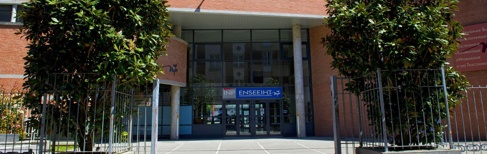

Bienvenue au cours de Traitement du Signal#
Bienvenue au cours de Traitement du Signal, 1ère Année, du département Sciences du Numérique de ENSEEIHT, Toulouse INP.
Vous trouverez ici les diapositives de présentation de cette matière :
Diapositives :
Fichier pdf
Dans les rubriques suivantes, vous trouverez l’ensemble des ressources (polycopiés, diapositives, codes, etc…) mises à dispositions pour ce cours.
Vous pouvez consulter les rubriques suivantes :
Vous pouvez directement accéder aux polycopiés en ligne des deux parties du cours ici :